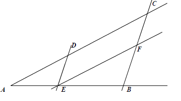

Matura 2013 styczeń
Liczbę \(x=2^2\cdot 16^{-4}\) można zapisać w postaci
A.\( x=2^{14} \)
B.\( x=2^{-14} \)
C.\( x=32^{-2} \)
D.\( x=2^{-6} \)
B
Hania pokonuje drogę \(S=100\ m\) z domu do szkoły w czasie \(30\ min\) . Z jaką
średnią prędkością idzie Hania?
A.\( 0{,}05\frac{km}{h} \)
B.\( 0{,}2\frac{km}{h} \)
C.\( 5\frac{km}{h} \)
D.\( 3{,}(3)\frac{km}{h} \)
B
Prostą przechodzącą przez punkt \(A = (1,1)\) i równoległą do prostej
\(y=0{,}5x-1\) opisuje równanie
A.\( y=-2x-1 \)
B.\( y=\frac{1}{2}x+\frac{1}{2} \)
C.\( y=-\frac{1}{2}x+\frac{1}{2} \)
D.\( y=2x-1 \)
B
Dziedziną wyrażenia wymiernego \(\frac{36-x^2}{(6-x)(x^3-1)}\) jest zbiór
A.\( \mathbb{R} \backslash \{1,6 \} \)
B.\( \mathbb{R} \backslash \{-6,-1,6 \} \)
C.\( \mathbb{R} \backslash \{-6,6 \} \)
D.\( \mathbb{R} \backslash \{-6,1,6 \} \)
A
Gdy przesuniemy wykres funkcji \(f(x)=2x-3\) o \(2\)
jednostki w prawo i \(4\) jednostki w górę, to otrzymamy wykres funkcji opisanej wzorem
A.\( y=2(x-2)+4 \)
B.\( y=2(x-2)-4 \)
C.\( y=2(x-2)+1 \)
D.\( y=2(x+2)+4 \)
C
Zbiorem wartości funkcji \(f\) określonej wzorem \(f(x)=3^{x+2}-3\) jest zbiór
A.\( (-2;\infty ) \)
B.\( (-3;-2) \)
C.\( (3;\infty ) \)
D.\( (-3;\infty ) \)
D
Pole koła opisanego na trójkącie równobocznym o wysokości \(9\) jest równe
A.\( 36\pi \)
B.\( 9\pi \)
C.\( 18\sqrt{3}\pi \)
D.\( 12\pi \)
A
Przyprostokątne trójkąta prostokątnego mają długości \(8\) i \(6\). Sinus większego
z kątów ostrych tego trójkąta jest równy
A.\( \frac{3}{5} \)
B.\( \frac{3}{4} \)
C.\( \frac{4}{5} \)
D.\( \frac{4}{3} \)
C
Proste \(y=-3x+4\) i \(y=\left (
\frac{1}{3}a^2-\frac{4}{3} \right )x\) są prostopadłe, jeżeli
A.\( a=-2\ \) lub \(\ a=2\)
B.\( a=2 \)
C.\( a=\sqrt{5} \)
D.\( a=-\sqrt{5}\ \) lub \(\ a=\sqrt{5}\)
D
Odcinek długości \(2{,}4\ m\) podzielono w stosunku \(2:3:5\). Najdłuższy z
wyznaczonych odcinków ma długość
A.\( 120\ cm \)
B.\( 0{,}72\ m \)
C.\( 480\ mm \)
D.\( 14\ dm \)
A
Zbiorem rozwiązań nierówności \(x^2\lt 4\) jest
A.\( (-2;2) \)
B.\( (-\infty ;-2)\cup (2;\infty ) \)
C.\( (-\infty ;2) \)
D.\( \langle -2;2 \rangle \)
A
Suma odwrotności pierwiastków wielomianu \(W(x)=4x^3-x^2-4x+1\) jest równa
A.\( 4 \)
B.\( -0{,}25 \)
C.\( 6 \)
D.\( -4 \)
A
Liczba \(2\log_{\frac{1}{5}}\! 125\) jest równa
A.\( 6 \)
B.\( -3 \)
C.\( 3 \)
D.\( -6 \)
D
Liczba \(x=3\sqrt{2}\) jest pierwiastkiem wielomianu \(W(x)=x^2-2a\), gdy \(a\)
jest równe
A.\( 18 \)
B.\( -18 \)
C.\( 9 \)
D.\( 18\sqrt{2} \)
C
Wyniki sprawdzianu z matematyki przedstawione są w tabeli:
Mediana ocen ze sprawdzianu jest równa
| Ocena | 1 | 2 | 3 | 4 | 5 | 6 |
| Liczba uczniów | 2 | 3 | 7 | 6 | 4 | 2 |
A.\( 3{,}5 \)
B.\( 3 \)
C.\( 4 \)
D.\( 4{,}5 \)
A
Wyrażenie \( \frac{1-\sin^{2} \alpha }{\frac{1}{\operatorname{tg}^2\alpha }} \),
gdzie \(\alpha \) jest kątem ostrym, można zapisać w postaci
A.\( \sin^{2} \alpha \)
B.\( \frac{\cos^4\alpha }{\sin \alpha } \)
C.\( \sin \alpha \cdot \cos \alpha \)
D.\( \frac{1}{\sin \alpha } \)
A
Funkcja kwadratowa \(y=x^2+bx+c\) jest malejąca dla \(x\in (-\infty ;2 \rangle\) a
zbiorem jej wartości jest przedział \(\langle -4;\infty )\). Postać kanoniczna tej funkcji opisana
jest wzorem
A.\( f(x)=(x-2)^2-4 \)
B.\( f(x)=(x+2)^2+4 \)
C.\( f(x)=(x+4)^2+2 \)
D.\( f(x)=(x-4)^2+2 \)
A
Ciąg \(a_n\) jest określony wzorem \(a_n=(-2)^{3n}\cdot
(n^2-4)\) dla \(n\ge 1\). Wówczas
A.\( a_2=64 \)
B.\( a_2=0 \)
C.\( a_2=-64 \)
D.\( a_2=128 \)
B
Odległość z Elbląga do Legnicy jest równa \(468\) km, natomiast po zaokrągleniu do
setek kilometrów \(500\) km. Błąd względny tego przybliżenia jest równy
A.\( 32 \) km
B.\( 68 \) km
C.około \( 6{,}8\% \)
D.\( 0{,}32\% \)
C
Liczby \(2;\ 2x-1;\ 0{,}5\) (w podanej kolejności) są
pierwszym, drugim i trzecim wyrazem monotonicznego ciągu geometrycznego dla
A.\( x=0 \)
B.\( x=0 \) lub \(x=1\)
C.\( x=1 \)
D.\( x=-1 \)
C
Zbiór rozwiązań nierówności \(|x+3|>4\) jest przedstawiony na rysunku 
D
W pudełku są \(4\) kule białe i \(x\) kul czerwonych. Prawdopodobieństwo
wylosowania kuli czerwonej jest równe \(\frac{3}{5}\), gdy
A.\( x=6 \)
B.\( x=8 \)
C.\( x=10 \)
D.\( x=12 \)
A
Objętość sześcianu, w którym przekątna ściany bocznej ma długość
\(\frac{\sqrt{2}}{4}\), jest równa
A.\( \frac{1}{64} \)
B.\( \frac{1}{16} \)
C.\( 16 \)
D.\( 64 \)
A
Proste \(DE\) i \(CB\) oraz \(EF\) i \(AC\) są równoległe. Oblicz długość odcinka
\(EB\), jeżeli \(AE = 2{,}5\), \(DE = 3\) oraz
\(FB=4\). 
\(|EB|=\frac{10}{3}\)
Oblicz wartość wyrażenia \(\operatorname{tg}^2\alpha -3\cos ^2\alpha \), jeżeli
\(\sin \alpha =\frac{\sqrt{3}}{2}\) i \(\alpha \) jest kątem ostrym.
\(2\frac{1}{4}\)
Uzasadnij, że równanie \(x^2+(b-2)x-2b=0\) dla dowolnej
liczby rzeczywistej \(b\) ma przynajmniej jedno rozwiązanie.
Wykaż, że wysokość \(CD\) trójkąta prostokątnego \(ABC\) poprowadzona z wierzchołka
\(C\) kąta prostego dzieli przeciwprostokątną na odcinki \(AD\) i \(DB\), których stosunek długości
jest równy stosunkowi kwadratów długości przyprostokątnych odpowiednio \(AC\) i \(BC\) tego
trójkąta.
O pewnym ciągu arytmetycznym wiadomo, że ma dziesięć wyrazów. Suma jego wyrazów o
numerach nieparzystych jest równa \(75\), a suma wyrazów o numerach parzystych jest równa \(90\).
Wyznacz pierwszy wyraz tego ciągu.
\(a_1=3\)
Rzucamy cztery razy symetryczną monetą. Co jest bardziej prawdopodobne: wyrzucenie
jednej reszki czy wyrzucenie orła w co drugim rzucie?
Bardziej prawdopodobne jest wyrzucenie jednej reszki
Wyznacz współrzędne punktu \(A'\), który jest symetryczny do punktu \(A = (3, 2)\)
względem prostej \(y=-\frac{1}{3}x-6\).
\(B=\left(-2\frac{4}{10};\ -14\frac{2}{10}\right)\)
Krawędź sześcianu jest o \(4\) krótsza od jego przekątnej. Oblicz pole powierzchni
całkowitej tego sześcianu.
\(P_c=96+48\sqrt{3}\)